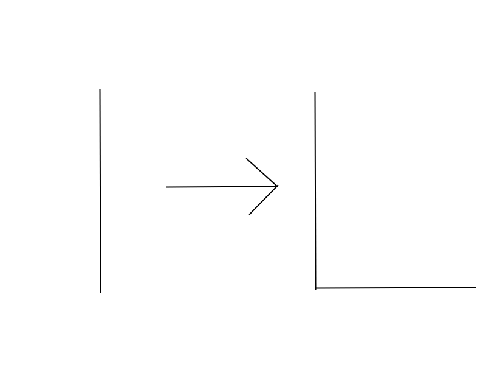
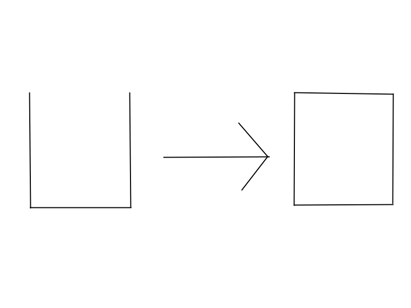

Instructions
Here are the materials and directions for drawing a square:
Materials
- Paper
- Pencil
- Faith in yourself
Directions
- Step 1: Draw a line straight down
- Step 2: Draw a line perpendicular to the original line you drew
- Step 3: Draw a line going the same direction as the original line went and make it the same length
- Step 4: Draw a line connecting the original line and the last line you just drew

